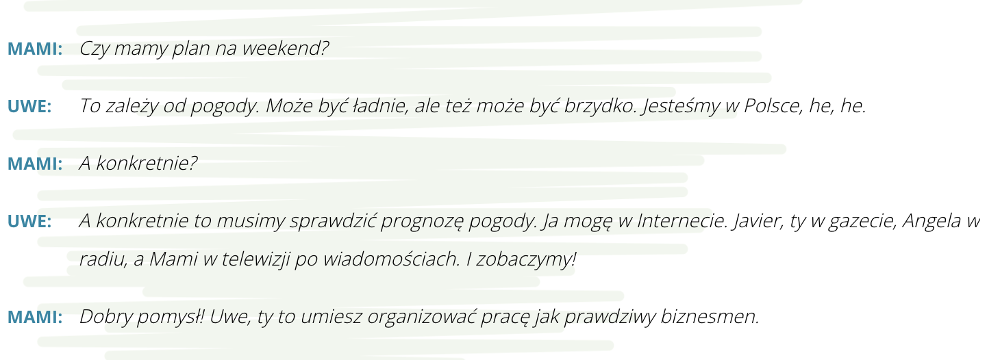
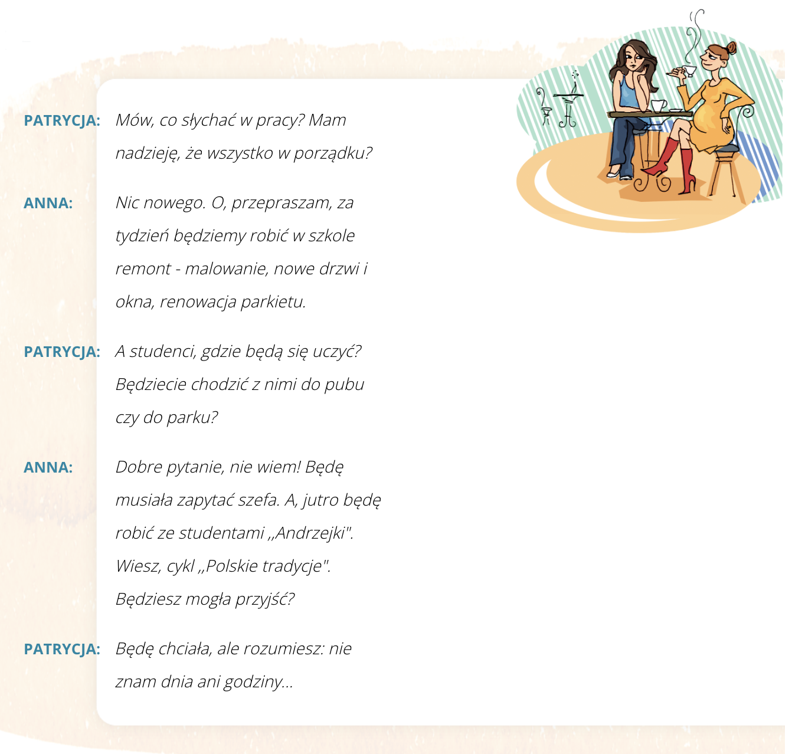

Krok Po Kroku 1
Temat 16 - Co ma być, to będzie.
A. Parasol noś i przy pogodzie
B. Miesiąc styczeń - czas życzeń
C. Dzieci najmilsze gdy śpią
D. W dzień świętego Andrzeja pannom z wróżby nadzieja
A. Parasol noś i przy pogodzie
słownistwo - A. Parasol noś i przy pogodzie
Dialog 1
PORY ROKU
Na pytanie kiedy? zwykle odpowiadamy używając narzędnika bez przyimka, ale czasem pojawia się też inna forma:
📌 PRZYSŁÓWEK – Наречие
Это неизменяемая часть речи, которая отвечает на вопросы:
jak?, kiedy? gdzie?
ile?
🛠️ Как образуются наречия?

В польском языке наречия (przysłówek) часто образуются от прилагательных и могут иметь различные окончания:
-
-o:
Например, "wysoko" (высоко) от "wysoki" (высокий), "tanio" (дёшево) от "tani" (дешёвый).
-
-io:
Например, "biegle" (свободно/бегло) от "biegły" (беглый).
-
-e:
Например, "pięknie" (красиво) от "piękny" (красивый).
-
-ie:
ładny → ładnie, piękny → pięknie
Dialog 2

POGODA
- Uwe:Mam dobrą wiadomość! Weekend będzie fantastyczny! Zimno: mróz około dziesięciu stopni Celsjusza poniżej zera, ale będzie świecić słońce, i - Javier - specjalnie dla ciebie będzie padać śnieg ! W Argentynie tego nie macie, prawda? Możemy pojechać do Zakopanego.
- Javier:O, serio? W gazecie pisali, że zero słońca: będzie pochmurno, zero śniegu: będzie padać deszcz, no i rano mgła jak w Londynie. Fantastycznie?
- ANGELA: Jest szansa, że będzie OK. W radiu mówili, że temperatura idzie do góry: będzie ciepło, ale niestety będzie wiać silny wiatr, no i wieczorem może być burza. Jesienią czy zimą to nietypowa pogoda.
- MAMI:Nic nie rozumiem. W telewizji pan mówił, że będzie chłodno, około zera stopni, może padać grad, ale krótko, no i jak zwykle będzie niskie ciśnienie.
- ANGELA:Ciśnienie? W Anglii nigdy nie słyszałam tego słowa..
- MAMI: Ja też nie. Ale pan Maj ma barometr i codziennie rano ogląda, jakie jest ciśnienie. A potem mówi, że jest zmęczony, nie chce iść do pracy i ma migrenę, bo ciśnienie jest za niskie.
- Javier::O tak, świetnie rozumiem. Też tak często mam, ale teraz już wiem dlaczego!
Na pytanie: Jaka jest dziś pogoda? odpowiadamy zwykle przy użyciu przysłówka:
- jast ładna
- jest brzydko
- jest słoneczne
- jest zimno
lub:
- jest ładna pogoda
- jest brzydka pogoda. (nie mówimy:
Jest zła pogoda.) - jest za bardzo zimno. (nie mówimy:
jest dużo zimno.)
🧩 Pogoda – ćwiczenie
| Kategoria | Odpowiedzi |
|---|---|
| 💧 Pada (padać) | deszcz, śnieg, burza |
| 🌡️ Jest (być) | ciepło, chłodno, mgła, pochmurno, mróz, niskie ciśnienie |
| ☀️ Świeci (świecić) | słońce |
| 🌬️ Wieje (wiać) | wiatr |
⛅ Dodatkowe wyrażenia
| Polski | Перевод |
|---|---|
| Niebo jest bezchmurne. | Небо безоблачное. |
| Niebo jest zachmurzone. | Небо затянуто облаками. |
| Będzie padać. | Будет дождь. |
| Ma być słonecznie. | Ожидается солнечно. |
| Zbliża się burza. | Приближается гроза. |
| Warunki pogodowe są trudne. | Погодные условия сложные. |
| Pogoda jest zmienna. | Погода переменчивая. |
🔄 Narzecza (наречия)
| Polski | Перевод |
|---|---|
| często | часто |
| rzadko | редко |
| zawsze | всегда |
| czasami | иногда |
| bardzo | очень |
| trochę | немного |
Opisowanie pogody
- Jutro w Małopolsce będzie piękna pogoda. Dużo słońca, bez deszczu. W nocy możliwe burze.
- W Warszawie na termometrach temperatura poniżej zera. Uwaga kierowcy: intensywne opady śniegu.
- W całej Polsce pochmurno, ale ciepło. Rano możliwe mgły.
- W Tatrach silny wiatr. W ciągu dnia będzie świecić słońce, ale w nocy zimno. Niestety, ciśnienie niskie i cały czas spada.
B. Miesiąc styczeń - czas życzeń
słownistwo - B. Miesiąc styczeń - czas życzeń =>

🧠 Советы по запоминанию:
- Почти все месяцы отвечают на вопрос „kiedy?” с предлогом „w + końcówka –u”.
-
Исключения:
- w lutym – потому что luty — это прилагательное.
- we wrześniu – из-за трудного звучания после „w”.
- w listopadzie – как и w październiku, miesiące kończące się na -ad/-ik получают końcówkę –ie.
C. Dzieci najmilsze gdy śpią
Dalog 3
📘 Czas przyszły złożony (dla czasowników niedokonanych)
👉 Сложное будущее время (для несовершенных глаголов)
✅ Wariant 1 – z bezokolicznikiem (prostszy)
🟦 Используется, когда не нужно указывать пол говорящего.
✅ Wariant 2 – z formą rodzaju i liczby (dokładniejszy)
🟨 Используется, когда важно показать пол говорящего или группы (например, в прошедшем времени в ответе на вопрос: co będziesz robiła? – jeśli mówi kobieta).
ℹ️ Пример:
- Jutro będę czytać książkę. (общий нейтральный вариант)
- Jutro będę czytał książkę. (мужчина говорит)
- Jutro będę czytała książkę. (женщина говорит)
как образовать сложное будущее время в польском языке с модальными глаголами
"móc" (мочь), "chcieć" (хотеть), "musieć" (быть должным).
Сложное будущее время (czas przyszły złożony) этих глаголов образуется по формуле:
czasownik "być" в будущем времени + форма прошедшего времени глагола "móc/chcieć/musieć"